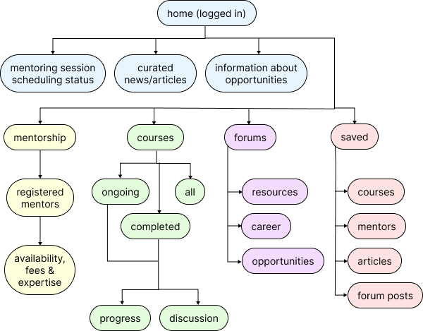
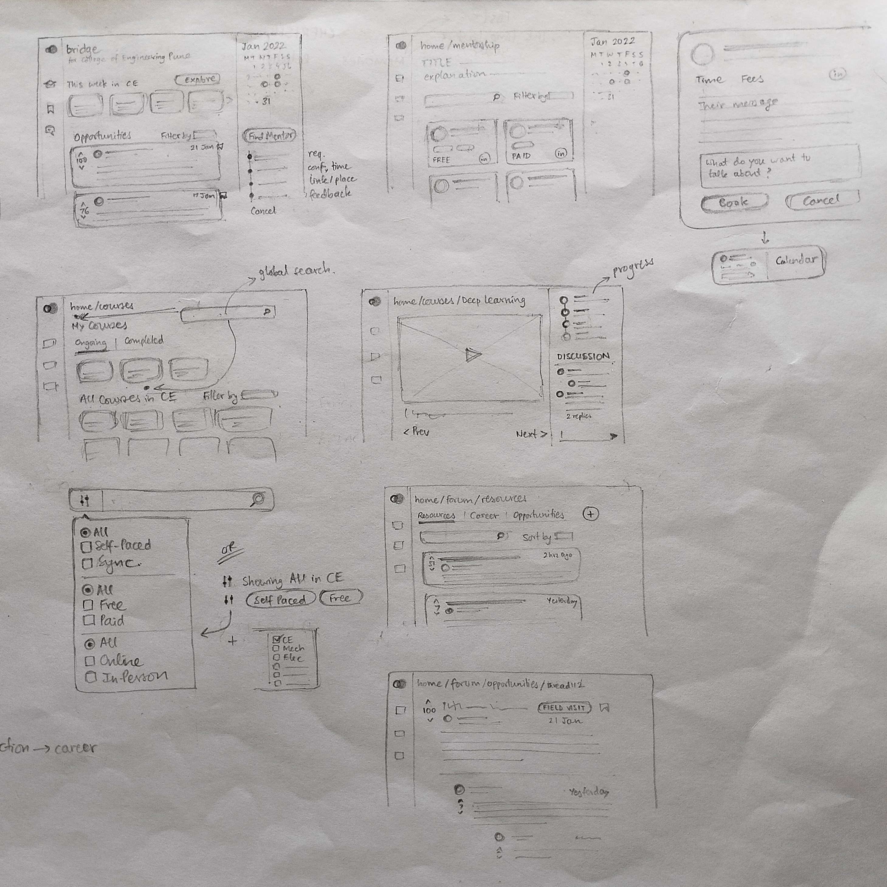

Education: Design a web or mobile application that allows students to learn from industry experts and provides resources to the community of your college. Students should be able to build their skills through flexible and affordable options like free or paid courses, skills, certifications, etc. The features of the app are up to you to decide as long as they fall under the theme of education.
From my discussion with classmates, I found that undergraduate students at my college are experiencing a rift between their college curriculum and real professional work in terms of both technology and standard practices.
“Only during my summer internship did I realize that the way we write computer programs in college is totally unacceptable! I thought I knew what modular code is, but I didn’t really…”
I heard students describe their curriculum as “vague” and “superficial”. Not being able to relate the curriculum to the real world is bringing down students’ interest in learning. I had previously collaborated with many professionals willing to volunteer their time to guide students and share information about current developments in their field. We must take advantage of the existing connections that universities have with the industry to make good use of what these professionals have to offer.
Secondly, there is a massive influx of new information, opportunities, tools and resources everyday, making it difficult to pick what is useful and keep track of it. Handled properly, these will support learning and career growth.
Concept:
A web application to support education by bridging the gap between the curriculum and the real world - Bridge .
Approach:
Identifying user roles and use cases Information architecture Low fidelity sketches High fidelity screens Interactive prototype
Initial concepts:
Refined concept:
I eliminated a few concepts because of their resemblance to existing well-known logos, and selected concept #2 for its simplicity.
I incorporated the idea that the aim of education is to move towards the goal of making students ready for the real world. Here, I chose yellow to stand for the college curriculum/education, and blue to represent the real world.
Bridge will be used by students, professors and industry-partner mentors attached to a single college.
Due to time constraints, the scope of this design is restricted to the interface for students, and as used on a laptop or desktop.
Use cases-
Bridge is NOT a video conferencing platform for mentorship sessions. Only scheduling will take place through Bridge (including sharing a meeting link/address).
Given more time, I would have done this differently, but this information architecture is not based on insights from research. I organized content going by my own intuition and based on what I had seen on similar websites.
As instructed in the prompt, there are three broad offerings - industry mentorship, courses and resources.
Low fidelity sketches:
High fidelity design:
Watch it in action: